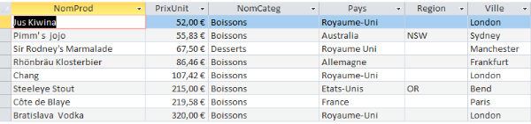

Boisson et dessert
L'offre de Kdou
Quels sont les pays de provenance de ces catégories ?

L’objectif de cette troisième mission est d’exploiter la base de données de l’entreprise KDou pour produire des analyses et indicateurs pertinents.
| Thèmes: |
Thème 1 Boisson et dessert |
Thème 2 L'offre de Kdou |
||
|---|---|---|---|---|
| Énoncé: |
Quels sont les pays de provenance de ces catégories ? |
On veut le chiffre d’affaire généré par catégorie desserts ou catégorie | Combien y–a-t-il de produits non commandés par catégorie ? | Quels sont les pays qui ont une offre importante de produit ? |
| Construction: | Pour ce premier indicateur, Cette requête SQL extrait une liste distincte de produits, incluant leur nom, prix unitaire, la catégorie du produit, ainsi que le pays, la région et la ville du fournisseur. Elle utilise des jointures (INNER JOIN) pour combiner les données des tables Produit, Categorie, et Fournisseur sur les clés correspondantes. La requête regroupe ensuite les résultats par les noms des produits, leurs prix unitaires, les noms des catégories, et les localisations des fournisseurs. Le filtrage s'effectue avec la clause HAVING pour ne retenir que les produits dont le prix unitaire est d'au moins 50 et qui appartiennent aux catégories "Boissons" ou "Desserts". Finalement, les résultats sont triés par le prix unitaire des produits. | Pour ce deuxième indicateur, la requête agrège les prix unitaires de tous les produits en calculant leur somme totale, puis utilise la clause HAVING pour filtrer et ne retourner que les sommes qui sont supérieures ou égales à 50. | Pour ce premier indicateur, la requête SQL utilise une jointure gauche pour associer les produits de la table Produit avec les détails de commandes de la table DetailCommande, comptant le nombre de produits qui n'ont pas été commandés (où le RefProd est NULL dans DetailCommande) pour chaque catégorie de produit (CodeCateg). Les résultats sont regroupés par catégorie de produit pour fournir un décompte de produits non commandés pour chaque catégorie. | Pour ce deuxième indicateur, la requête SQL calcule le nombre de produits fournis par chaque pays en joignant les tables Fournisseur et Produit sur le numéro du fournisseur. Elle groupe les résultats par pays et les trie en ordre décroissant du nombre de produits pour chaque pays, affichant ainsi les pays avec le plus grand nombre de produits en premier. |
| Requête SQL: | SELECT DISTINCT Produit.NomProd, Produit.PrixUnit, Categorie.NomCateg, Fournisseur.Pays, Fournisseur.Region, Fournisseur.Ville FROM Fournisseur INNER JOIN (Categorie INNER JOIN Produit ON Categorie.CodeCateg = Produit.CodeCateg) ON Fournisseur.NoFour = Produit.NoFour GROUP BY Produit.NomProd, Produit.PrixUnit, Categorie.NomCateg, Fournisseur.Pays, Fournisseur.Region, Fournisseur.Ville HAVING (((Produit.PrixUnit)>=50) AND ((Categorie.NomCateg)="Boissons" Or (Categorie.NomCateg)="Desserts")) ORDER BY Produit.PrixUnit; | SELECT DISTINCT Sum(Produit.PrixUnit) AS SommeDePrixUnit FROM Produit HAVING (((Sum(Produit.PrixUnit))>=50)); | SELECT Produit.CodeCateg, COUNT(Produit.RefProd) AS NbProduitsNonCommandes FROM Produit LEFT JOIN DetailCommande ON Produit.RefProd = DetailCommande.RefProd WHERE DetailCommande.RefProd IS NULL GROUP BY Produit.CodeCateg; ( BIZZARW ) | SELECT Fournisseur.Pays, COUNT(Produit.RefProd) AS NbProduits FROM Fournisseur INNER JOIN Produit ON Fournisseur.NoFour = Produit.NoFour GROUP BY Fournisseur.Pays ORDER BY COUNT(Produit.RefProd) DESC; |
| Résultats: |  |
|
||
| Thèmes |
Thème 3 Provenance des produits |
Thème 4 La clientèle |
||
|---|---|---|---|---|
| Énoncé: | Quels fournisseurs vendent uniquement des boissons ou des desserts ? | Y en a-t-il qui vendent les deux boissons et desserts ? | Certains clients n’ont jamais eu la remise la plus importante de 25%. Qui sont-ils ? | Quels produits n’ont eu que des remises de 10% ou 20% ou pas de remise ? |
| Construction: | Pour ce premier indicateur, la requête SQL sélectionne les fournisseurs qui fournissent uniquement des produits dans les catégories 1 et 3, sans avoir de produits dans d'autres catégories. Elle joint les tables Fournisseur, Categorie, et Produit pour associer chaque produit à son fournisseur et à sa catégorie, et utilise une condition EXISTS pour exclure les fournisseurs qui ont aussi des produits en dehors des catégories 1 et 3. Les résultats sont distincts pour éviter les doublons, et comprennent le numéro et le nom du fournisseur ainsi que le nom de la catégorie. | Pour ce deuxième indicateur, la requête SQL identifie de manière distincte les fournisseurs qui offrent des produits appartenant spécifiquement et exclusivement aux catégories 1 et 3. Elle utilise des jointures pour connecter les tables Fournisseur, Produit, et Categorie, et intègre des sous-requêtes pour vérifier que chaque fournisseur listé fournit des produits dans les deux catégories spécifiées, assurant ainsi qu'ils répondent aux critères de sélection stricts. | Pour ce premier indicateur, la requête SQL sélectionne les clients qui n'ont jamais reçu une remise de 25% sur leurs commandes. Elle utilise une sous-requête pour identifier les clients ayant bénéficié de cette remise spécifique dans les détails de leurs commandes, puis exclut ces clients du résultat final en utilisant la condition NOT IN. Les tables Commande et DetailCommande sont jointes pour accéder aux détails des remises appliquées aux commandes. | Pour ce deuxième indicateur, la requête SQL identifie les produits qui n'ont jamais reçu de remise autre que 0%, 10%, ou 20%. Elle le fait en excluant les produits qui apparaissent dans une sous-requête laquelle liste tous les produits ayant reçu des remises différentes de ces trois valeurs spécifiques. Les résultats incluent les références et les noms de ces produits. |
| Requête SQL: | SELECT DISTINCT F.NoFour, F.Societe, C.NomCateg FROM Fournisseur AS F INNER JOIN (Categorie AS C INNER JOIN Produit AS P ON C.CodeCateg = P.CodeCateg) ON F.NoFour = P.NoFour WHERE (((C.CodeCateg) IN (1,3)) AND ((Exists (SELECT 1 FROM Produit Pp WHERE Pp.NoFour = F.NoFour AND Pp.CodeCateg NOT IN (1,3) ))=False)); | SELECT DISTINCT F.NoFour, F.Societe FROM ((Fournisseur F INNER JOIN Produit P ON F.NoFour = P.NoFour) INNER JOIN Categorie C ON P.CodeCateg = C.CodeCateg) WHERE C.CodeCateg IN (1,3) AND F.NoFour IN ( SELECT F2.NoFour FROM ((Fournisseur F2 INNER JOIN Produit P2 ON F2.NoFour = P2.NoFour) INNER JOIN Categorie C2 ON P2.CodeCateg = C2.CodeCateg) WHERE C2.CodeCateg = 1 ) AND F.NoFour IN ( SELECT F3.NoFour FROM ((Fournisseur F3 INNER JOIN Produit P3 ON F3.NoFour = P3.NoFour) INNER JOIN Categorie C3 ON P3.CodeCateg = C3.CodeCateg) WHERE C3.CodeCateg = 3 ); | SELECT C.CodeCli, C.SocieteCli FROM Client C WHERE C.CodeCli NOT IN ( SELECT CO.CodeCli FROM Commande CO INNER JOIN DetailCommande DC ON CO.NoCom = DC.NoCom WHERE DC.Remise = 25 ); | SELECT P.RefProd, P.NomProd FROM Produit P WHERE P.RefProd NOT IN ( SELECT DC.RefProd FROM DetailCommande DC WHERE DC.Remise NOT IN (0, 10, 20) ); |
| Résultats: |

|

|
||
| Membre Équipe: | Requête 1 | Requête 2 | Requête 3 | Requête 4 |
|---|---|---|---|---|
| Énoncé: | Afficher toutes les livraisons avec des frais de port supérieur ou égal à 50 | Faire un compte de tous les produits de chaque fournisseur puis de les mettre par ordre décroissant | Afficher les founisseurs qui génèrent le plus de profits à la sociétés, basés sur les articles commandés, tout en prenant en considération des réductions possibles | Afficher les produits qui ne sont plus en stock et leurs fournisseurs |
| Construction: | Cette requête SQL extrait une liste distincte des frais de port, références de produit, codes de catégorie, et noms de produits pour les commandes dont les frais de port sont supérieurs ou égaux à 50. Elle réalise cela en effectuant une série de jointures complexes entre les tables Fournisseur, Produit, Categorie, Client, Commande, et DetailCommande, assurant que chaque produit est correctement lié à sa commande, sa catégorie, et son fournisseur. Les résultats sont filtrés pour inclure uniquement ceux avec des frais de port élevés, fournissant une vue ciblée sur des commandes spécifiquement coûteuses en termes de transport. | Cette requête SQL compte le nombre de produits pour chaque fournisseur et les classe par ordre décroissant de ce nombre. Elle relie les tables Fournisseur et Produit via une jointure interne sur le numéro du fournisseur, regroupe les résultats par numéro et nom de fournisseur, et ordonne les résultats pour montrer les fournisseurs avec le plus grand nombre de produits en premier. | Cette requête SQL extrait des informations distinctes sur les sociétés de fournisseurs, les numéros de fournisseur, la quantité par unité et le prix unitaire des produits, ainsi que les remises appliquées sur les commandes. Elle joint les tables Fournisseur, Produit, et DetailCommande pour calculer le chiffre d'affaires total ajusté par les remises pour chaque combinaison de produit et fournisseur. Les résultats sont groupés par société de fournisseur, numéro de fournisseur, quantité par unité, prix unitaire, et remise, puis triés par le nom de la société en ordre décroissant. | Cette requête sélectionne de manière distincte le nom de la société, le nom des produits et leur quantité en stock, en éliminant les doublons, depuis la table Fournisseur. Elle utilise un INNER JOIN pour relier les données avec la table Produit, afin d'identifier les produits de chaque fournisseur dont le stock est à zéro. La condition WHERE est utilisée pour filtrer uniquement les produits avec un stock nul. Enfin, les résultats sont triés par le nom du fournisseur. |
| Requête SQL: | SELECT DISTINCT Produit.NomProd, Produit.PrixUnit, Categorie.NomCateg, Fournisseur.Pays, Fournisseur.Region, Fournisseur.Ville FROM Fournisseur INNER JOIN (Categorie INNER JOIN Produit ON Categorie.CodeCateg = Produit.CodeCateg) ON Fournisseur.NoFour = Produit.NoFour GROUP BY Produit.NomProd, Produit.PrixUnit, Categorie.NomCateg, Fournisseur.Pays, Fournisseur.Region, Fournisseur.Ville HAVING (((Produit.PrixUnit)>=50) AND ((Categorie.NomCateg)="Boissons" Or (Categorie.NomCateg)="Desserts")) ORDER BY Produit.PrixUnit; | SELECT Fournisseur.NoFour, Fournisseur.Societe, COUNT(P.RefProd) AS NbProduits FROM Fournisseur INNER JOIN Produit AS P ON Fournisseur.NoFour = P.NoFour GROUP BY Fournisseur.NoFour, Fournisseur.Societe ORDER BY COUNT(P.RefProd) DESC; | SELECT DISTINCT Fournisseur.Societe, Fournisseur.NoFour, Produit.QteParUnite, Produit.PrixUnit, DetailCommande.Remise, Sum([QteCom][PrixUnit](1-[Remise]/100)) AS TotalChiffreAffaire FROM (Fournisseur INNER JOIN Produit ON Fournisseur.NoFour = Produit.NoFour) INNER JOIN DetailCommande ON Produit.RefProd = DetailCommande.RefProd GROUP BY Fournisseur.Societe, Fournisseur.NoFour, Produit.QteParUnite, Produit.PrixUnit, DetailCommande.Remise ORDER BY Fournisseur.Societe DESC; | SELECT DISTINCT Fournisseur.Societe, Produit.NomProd, Produit.UniteStock FROM Fournisseur INNER JOIN Produit ON Fournisseur.NoFour = Produit.NoFour WHERE (((Produit.UniteStock)=0)) ORDER BY Fournisseur.Societe, Produit.NomProd; |
| Résultat: |

|

|
L'analyse des données de KDou nous a permis identifié des axes d'amélioration significatifs dans ses opérations, fournisseurs et préférences clients, révélant que des ajustements dans la gestion des stocks, la stratégie de prix et les promotions pourraient réduire les coûts et accroître la satisfaction client. Des produits à faible rotation et des remises significatives suggèrent des ajustements stratégiques, tandis que certaines catégories de produits performantes offrent des opportunités d'expansion pour capitaliser sur les tendances du marché.
Les outils de requêtes SQL et de gestion de bases de données relationnelles utilisés pour analyser les données de KDou ont efficacement fourni des insights détaillés sur les opérations de l'entreprise. Des jointures internes et externes ont été utilisées pour lier les différentes tables et obtenir les résultats escomptés.